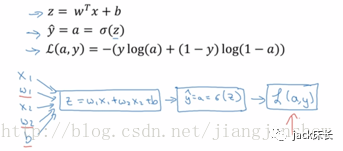
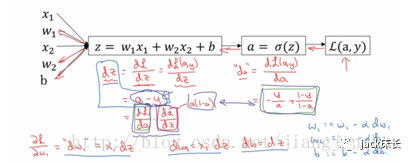

<!DOCTYPE html>
<html>
<head><meta name="generator" content="Hexo 3.8.0">
  <meta charset="utf-8">

  <!-- PACE Progress Bar START -->
  
    <script src="https://raw.githubusercontent.com/HubSpot/pace/v1.0.2/pace.min.js"></script>
    <link rel="stylesheet" href="https://github.com/HubSpot/pace/raw/master/themes/orange/pace-theme-flash.css">
  
  

  <!-- PACE Progress Bar START -->

  
  <title>人工智能初识 2.5：如何计算逻辑回归的偏导数 | Blog of Geowind</title>
  <meta name="viewport" content="width=device-width, initial-scale=1, maximum-scale=1">
  
  <meta name="keywords" content="人工智能神经网络">
  
  
  
  
  <meta name="description" content="使用计算图表示计算逻辑回归的偏导数">
<meta name="keywords" content="人工智能,神经网络">
<meta property="og:type" content="article">
<meta property="og:title" content="人工智能初识 2.5：如何计算逻辑回归的偏导数">
<meta property="og:url" content="http://geowind.org/GeowindBlog/archives/ebb9c432.html">
<meta property="og:site_name" content="Blog of Geowind">
<meta property="og:description" content="使用计算图表示计算逻辑回归的偏导数">
<meta property="og:locale" content="default">
<meta property="og:image" content="http://geowind.org/GeowindBlog/assets/2_5_1.png">
<meta property="og:image" content="http://geowind.org/GeowindBlog/assets/2_5_2.png">
<meta property="og:image" content="http://geowind.org/GeowindBlog/assets/2_5_3.png">
<meta property="og:updated_time" content="2018-10-24T14:07:24.000Z">
<meta name="twitter:card" content="summary">
<meta name="twitter:title" content="人工智能初识 2.5：如何计算逻辑回归的偏导数">
<meta name="twitter:description" content="使用计算图表示计算逻辑回归的偏导数">
<meta name="twitter:image" content="http://geowind.org/GeowindBlog/assets/2_5_1.png">
  
    <link rel="alternate" href="/atom.xml" title="Blog of Geowind" type="application/atom+xml">
  
  <link rel="icon" href="/GeowindBlog/css/images/favicon.ico">
  
    <link href="//fonts.googleapis.com/css?family=Source+Code+Pro" rel="stylesheet" type="text/css">
  
  <link href="https://fonts.googleapis.com/css?family=Open+Sans|Montserrat:700" rel="stylesheet" type="text/css">
  <link href="https://fonts.googleapis.com/css?family=Roboto:400,300,300italic,400italic" rel="stylesheet" type="text/css">
  <link href="https://cdn.bootcss.com/font-awesome/4.6.3/css/font-awesome.min.css" rel="stylesheet">
  <style type="text/css">
    @font-face{font-family:futura-pt;src:url(https://use.typekit.net/af/9749f0/00000000000000000001008f/27/l?subset_id=2&fvd=n5) format("woff2");font-weight:500;font-style:normal;}
    @font-face{font-family:futura-pt;src:url(https://use.typekit.net/af/90cf9f/000000000000000000010091/27/l?subset_id=2&fvd=n7) format("woff2");font-weight:500;font-style:normal;}
    @font-face{font-family:futura-pt;src:url(https://use.typekit.net/af/8a5494/000000000000000000013365/27/l?subset_id=2&fvd=n4) format("woff2");font-weight:lighter;font-style:normal;}
    @font-face{font-family:futura-pt;src:url(https://use.typekit.net/af/d337d8/000000000000000000010095/27/l?subset_id=2&fvd=i4) format("woff2");font-weight:400;font-style:italic;}</style>
    
  <link rel="stylesheet" id="athemes-headings-fonts-css" href="//fonts.googleapis.com/css?family=Yanone+Kaffeesatz%3A200%2C300%2C400%2C700&amp;ver=4.6.1" type="text/css" media="all">
  <link rel="stylesheet" href="/GeowindBlog/css/style.css">

  <script src="https://code.jquery.com/jquery-3.1.1.min.js"></script>

  <!-- Bootstrap core CSS -->
  <link rel="stylesheet" href="https://netdna.bootstrapcdn.com/bootstrap/3.0.2/css/bootstrap.min.css">
  <link rel="stylesheet" href="/GeowindBlog/css/hiero.css">
  <link rel="stylesheet" href="/GeowindBlog/css/glyphs.css">
  

  <!-- Custom CSS -->
  <link rel="stylesheet" href="/GeowindBlog/css/my.css">
  <!-- Google Adsense -->
  
</head>
</html>
<script>
var themeMenus = {};

  themeMenus["/GeowindBlog/"] = "Home"; 

  themeMenus["/GeowindBlog/archives/"] = "Archives"; 

  themeMenus["/GeowindBlog/categories/"] = "Categories"; 

  themeMenus["/GeowindBlog/tags/"] = "Tags"; 

  themeMenus["/GeowindBlog/about/"] = "About"; 

</script>


  <body data-spy="scroll" data-target="#toc" data-offset="50">


  <header id="allheader" class="site-header" role="banner">
  <div class="clearfix container">
      <div class="site-branding">

          <h1 class="site-title">
            
              <a href="/GeowindBlog/" rel="home">
                
              </a>
            
          </h1>

          
            <div class="site-description">Everyone can make a difference , Geowind Here</div>
          
            
          <nav id="main-navigation" class="main-navigation" role="navigation">
            <a class="nav-open">Menu</a>
            <a class="nav-close">Close</a>
            <div class="clearfix sf-menu">

              <ul id="main-nav" class="nmenu sf-js-enabled">
                    
                      <li class="menu-item menu-item-type-custom menu-item-object-custom menu-item-home menu-item-1663"> <a class="" href="/GeowindBlog/">Home</a> </li>
                    
                      <li class="menu-item menu-item-type-custom menu-item-object-custom menu-item-home menu-item-1663"> <a class="" href="/GeowindBlog/archives/">Archives</a> </li>
                    
                      <li class="menu-item menu-item-type-custom menu-item-object-custom menu-item-home menu-item-1663"> <a class="" href="/GeowindBlog/categories/">Categories</a> </li>
                    
                      <li class="menu-item menu-item-type-custom menu-item-object-custom menu-item-home menu-item-1663"> <a class="" href="/GeowindBlog/tags/">Tags</a> </li>
                    
                      <li class="menu-item menu-item-type-custom menu-item-object-custom menu-item-home menu-item-1663"> <a class="" href="/GeowindBlog/about/">About</a> </li>
                    
              </ul>
            </div>
          </nav>


      </div>
  </div>
</header>


  <div id="container">
    <div id="wrap">
            
      <div id="content" class="outer">
        
          <section id="main" style="float:none;"><article id="post-人工智能初识 2.5：如何计算逻辑回归的偏导数" style="width: 66%; float:left;" class="article article-type-post" itemscope="" itemprop="blogPost">
  <div id="articleInner" class="clearfix post-1016 post type-post status-publish format-standard has-post-thumbnail hentry category-template-2 category-uncategorized tag-codex tag-edge-case tag-featured-image tag-image tag-template">
    
    
      <header class="article-header">
        
  
    <h1 class="thumb" itemprop="name">
      人工智能初识 2.5：如何计算逻辑回归的偏导数
    </h1>
  

      </header>
    
    <div class="article-meta">
      
	Posted on <a href="/GeowindBlog/archives/ebb9c432.html" class="article-date">
	  <time datetime="2018-10-24T14:07:24.000Z" itemprop="datePublished">October 24, 2018</time>
	</a>

      
	<span id="busuanzi_container_page_pv">
	  本文总阅读量<span id="busuanzi_value_page_pv"></span>次
	</span>

    </div>
    <div class="article-entry" itemprop="articleBody">
      
        <p>使用计算图表示计算逻辑回归的偏导数<br><a id="more"></a></p>
<h1 id="如何计算逻辑回归的偏导数"><a href="#如何计算逻辑回归的偏导数" class="headerlink" title="如何计算逻辑回归的偏导数"></a>如何计算逻辑回归的偏导数</h1><h2 id="计算图"><a href="#计算图" class="headerlink" title="计算图"></a>计算图</h2><p>计算图是我们在研究神经网络时经常用到的一个重要手段，因为在实际工作中神经网络是很复杂的，要借助于计算图才能使其条理清晰，让复杂的事情变得直观便于研究。</p>
<p>神经网络的计算是由一个前向传播以及一个反向传播构成的。先通过前向传播计算出预测结果以及损失；然后再通过反向传播计算出损失函数关于每一个参数（w、b）的偏导数，并对这些参数进行梯度下降，然后用新的参数进行新一轮的前向传播计算，这样来回不停地进行前向传播反向传播计算来训练（更新）参数使损失函数越来越小使预测越来越精准。</p>
<h2 id="逻辑回归计算图"><a href="#逻辑回归计算图" class="headerlink" title="逻辑回归计算图"></a>逻辑回归计算图</h2><p>首先让我们来回顾一下有关逻辑回归的知识。如下图所示，在逻辑回归的前向传播过程中，第一步我们要先计算出z，第二步计算出预测值y’或a，最后计算出损失函数L。他们的计算公式之前已经讲过，这里就不再啰嗦了。（下图中假设只有两个特征x1和x2）<br><br>上面是前向传播，那么反向传播应该如何计算呢？</p>
<h3 id="单个样本计算逻辑回归偏导数"><a href="#单个样本计算逻辑回归偏导数" class="headerlink" title="单个样本计算逻辑回归偏导数"></a>单个样本计算逻辑回归偏导数</h3><p>我们最终的目的是要计算出dL/dw1和dL/dw2以及dL/db，然后更新w1、w2、b以使损失函数L越来越小，使预测越来越精准。为了计算出dw1、dw2和db，第一步需要计算出da（dL/da）。da的计算公式是-(y/a)+(1-y)/(1-a)，这个公式是根据微积分知识求导出来的，如果你熟悉微积分你可以自己对L进行关于a的求导运算最终会得到上面的公式；如果你不熟悉微积分没有关系，只要记住上面那个公式就行了。本系列教程中会提供所有相关的公式，从某些角度上来说，重点不在于那些公式，重点在于对人工智能机制和理论的理解以及如何利用人工智能技术解决实际问题。下一步我们需要求出dz，根据链式法则dz可以通过（dL/da）（da/dz）求出，（dL/da）上面我们已经求出来了，（da/dz）的计算公式是a(1-a)，经过计算后dz=a-y。同理，我们可以计算出dw1=x1dz，dw2=x2dz，db=dz。如下所示：<br><br>得到dw1、dw2、db后，就可以更新这些参数值进行梯度下降，例如w1hat=w1-adw1，然后用新的参数值再次进行前向传播然后再反向传播，<br>通过这样不停的前向反向传播来训练参数。</p>
<h3 id="多个样本计算逻辑回归偏导数"><a href="#多个样本计算逻辑回归偏导数" class="headerlink" title="多个样本计算逻辑回归偏导数"></a>多个样本计算逻辑回归偏导数</h3><p>上面讲述的是单个训练样本时如何计算逻辑回归的偏导数（训练样本—例如在训练识别猫的神经网络中，一张猫的图片就是一个训练样本），下面我给大家介绍多个训练样本时如何计算偏导数。</p>
<p>通过对前面文章的学习我们已经知道——成本其实就是多个样本的损失的平均值——m个样本的损失累加起来然后除以m就是成本。同理，多个样本时的偏导数等于每个样本的偏导数的平均值。</p>
<p>下图给出m个样本时计算偏导数的伪码。先将各个变量初始化为0，然后用一个for循环遍历m个样本，在for循环中将每个样本的损失和偏导数进行累加，出了for循环后，再将累加值除以m得到平均值。<br><br>利用上面的计算过程我们实现了逻辑回归的前向传播、反向传播，对参数进行梯度下降，一步一步的更新参数，使预测越来越精准。但在实际应用中，上面的过程是有瑕疵的。上面过程包含了两个循环，一个循环用于遍历每个样本（上面有m个样本），另一个循环用于遍历每一个特征（上面只有两个特征），实际应用中用于训练的数据集是非常非常大的，这两个循环的存在会导致训练非常非常的慢，前面的文章我们讲到过训练速度对于深度学习是非常非常重要的。<br>为了去掉上面两个循环，我们使用了一种叫做向量化的技术，他大大的提升了训练速度。下篇文章我将为大家介绍它。</p>

      
    </div>
    <footer class="entry-meta entry-footer">
      
	<span class="ico-folder"></span>
    <a class="article-category-link" href="/GeowindBlog/categories/人工智能初识/">人工智能初识</a>, <a class="article-category-link" href="/GeowindBlog/categories/人工智能初识/（二）/">（二）</a>

      
  <span class="ico-tags"></span>
  <ul class="article-tag-list"><li class="article-tag-list-item"><a class="article-tag-list-link" href="/GeowindBlog/tags/人工智能/">人工智能</a></li><li class="article-tag-list-item"><a class="article-tag-list-link" href="/GeowindBlog/tags/神经网络/">神经网络</a></li></ul>

      
            
      
        
	<div id="comment">
		<!-- 来必力City版安装代码 -->
		<div id="lv-container" data-id="city" data-uid="MTAyMC8yOTQ4MS82MDQ5">
		<script type="text/javascript">
		   (function(d, s) {
		       var j, e = d.getElementsByTagName(s)[0];

		       if (typeof LivereTower === 'function') { return; }

		       j = d.createElement(s);
		       j.src = 'https://cdn-city.livere.com/js/embed.dist.js';
		       j.async = true;

		       e.parentNode.insertBefore(j, e);
		   })(document, 'script');
		</script>
		<noscript>为正常使用来必力评论功能请激活JavaScript</noscript>
		</div>
		<!-- City版安装代码已完成 -->
	</div>


      
    </footer>
  </div>
  
    
<nav id="article-nav">
  
    <a href="/GeowindBlog/archives/8695a555.html" id="article-nav-newer" class="article-nav-link-wrap">
      <strong class="article-nav-caption">Newer</strong>
      <div class="article-nav-title">
        
          比特币：一种点对点的电子现金系统
        
      </div>
    </a>
  
  
    <a href="/GeowindBlog/archives/612b682b.html" id="article-nav-older" class="article-nav-link-wrap">
      <strong class="article-nav-caption">Older</strong>
      <div class="article-nav-title">人工智能初识 2.4：神经网络是如何进行学习的</div>
    </a>
  
</nav>

  
</article>

<!-- Table of Contents -->

  <aside id="sidebar">
    <div id="toc" class="toc-article">
    <strong class="toc-title">Contents</strong>
    
      <ol class="nav"><li class="nav-item nav-level-1"><a class="nav-link" href="#如何计算逻辑回归的偏导数"><span class="nav-number">1.</span> <span class="nav-text">如何计算逻辑回归的偏导数</span></a><ol class="nav-child"><li class="nav-item nav-level-2"><a class="nav-link" href="#计算图"><span class="nav-number">1.1.</span> <span class="nav-text">计算图</span></a></li><li class="nav-item nav-level-2"><a class="nav-link" href="#逻辑回归计算图"><span class="nav-number">1.2.</span> <span class="nav-text">逻辑回归计算图</span></a><ol class="nav-child"><li class="nav-item nav-level-3"><a class="nav-link" href="#单个样本计算逻辑回归偏导数"><span class="nav-number">1.2.1.</span> <span class="nav-text">单个样本计算逻辑回归偏导数</span></a></li><li class="nav-item nav-level-3"><a class="nav-link" href="#多个样本计算逻辑回归偏导数"><span class="nav-number">1.2.2.</span> <span class="nav-text">多个样本计算逻辑回归偏导数</span></a></li></ol></li></ol></li></ol>
    
    </div>
  </aside>
</section>
        
      </div>
      <footer id="footer" class="site-footer">
  

  <div class="clearfix container">
      <div class="site-info">
	      &copy; 2018 Blog of Geowind All Rights Reserved.
          
            <span id="busuanzi_container_site_uv">
              本站访客数<span id="busuanzi_value_site_uv"></span>人次  
              本站总访问量<span id="busuanzi_value_site_pv"></span>次
            </span>
          
      </div>
      <div class="site-credit">
        Theme by <a href="https://github.com/iTimeTraveler/hexo-theme-hiero" target="_blank">hiero</a>
      </div>
  </div>
</footer>


<!-- min height -->

<script>
    var contentdiv = document.getElementById("content");

    contentdiv.style.minHeight = document.body.offsetHeight - document.getElementById("allheader").offsetHeight - document.getElementById("footer").offsetHeight + "px";
</script>

<!-- Custome JS -->
<script src="/GeowindBlog/js/my.js"></script>
    </div>
    <!-- <nav id="mobile-nav">
  
    <a href="/GeowindBlog/" class="mobile-nav-link">Home</a>
  
    <a href="/GeowindBlog/archives/" class="mobile-nav-link">Archives</a>
  
    <a href="/GeowindBlog/categories/" class="mobile-nav-link">Categories</a>
  
    <a href="/GeowindBlog/tags/" class="mobile-nav-link">Tags</a>
  
    <a href="/GeowindBlog/about/" class="mobile-nav-link">About</a>
  
</nav> -->
    

<!-- mathjax config similar to math.stackexchange -->

<script type="text/x-mathjax-config">
  MathJax.Hub.Config({
    tex2jax: {
      inlineMath: [ ['$','$'], ["\\(","\\)"] ],
      processEscapes: true
    }
  });
</script>

<script type="text/x-mathjax-config">
    MathJax.Hub.Config({
      tex2jax: {
        skipTags: ['script', 'noscript', 'style', 'textarea', 'pre', 'code']
      }
    });
</script>

<script type="text/x-mathjax-config">
    MathJax.Hub.Queue(function() {
        var all = MathJax.Hub.getAllJax(), i;
        for(i=0; i < all.length; i += 1) {
            all[i].SourceElement().parentNode.className += ' has-jax';
        }
    });
</script>

<script type="text/javascript" src="https://cdnjs.cloudflare.com/ajax/libs/mathjax/2.7.4/MathJax.js?config=TeX-AMS-MML_HTMLorMML">
</script>


  <link rel="stylesheet" href="https://cdnjs.cloudflare.com/ajax/libs/fancybox/2.1.5/jquery.fancybox.min.css">
  <script src="https://cdnjs.cloudflare.com/ajax/libs/fancybox/2.1.5/jquery.fancybox.min.js"></script>


<script src="/GeowindBlog/js/scripts.js"></script>
<script src="https://stackpath.bootstrapcdn.com/bootstrap/3.3.7/js/bootstrap.min.js"></script>
<script src="/GeowindBlog/js/main.js"></script>


  <div style="display: none;">
    <script src="https://s95.cnzz.com/z_stat.php?id=1260716016&web_id=1260716016" language="JavaScript"></script>
  </div>


	<script async src="https://dnqof95d40fo6.cloudfront.net/atw7f8.js">
	</script>


  </div>

  <a id="rocket" href="#top" class=""></a>
  <script type="text/javascript" src="/js/totop.js" async=""></script>
</body>
</html>
